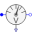

SMPM_ResistiveBrakingPermanentMagnetSynchronousMachine braking with a resistor |
|
Diagram
{kind=link}
Information
This information is part of the Modelica Standard Library maintained by the Modelica Association.
The voltages induced by the permanent magnets of the synchronous machine is shortened over the inductance and resistance of the stator winding and the (optional) external braking resistors. The currents driven by these voltages cause a braking torque.
The external braking resistor is implemented with three stages which get shortened at different points during braking. Note that the first (smallest) stage is not shortened, which ensures a minimum damping to avoid oscillations of angular velocity around zero. The total braking resistance (sum of all stages) has to be adapted to the angular velocity at which braking starts.
Plot tauElectrical and tauShaft versus wMechanical.
Default machine parameters are used.
Parameters (5)
| JLoad |
Value: 4 * smpmData.Jr Type: Inertia (kg·m²) Description: Load's moment of inertia |
|---|---|
| w0 |
Value: 2 * pi * smpmData.fsNominal / smpmData.p Type: AngularVelocity (rad/s) Description: Initial speed |
| k |
Value: {1, 3, 5} Type: Real[3] Description: Braking resistance stages w.r.t. Rs |
| idq_sr |
Value: Type: Current[2] (A) Description: Initial stator current space phasor |
| smpmData |
Value: Type: SM_PermanentMagnetData |
Components (17)
| smpmData |
Type: SM_PermanentMagnetData |
|
|---|---|---|
| smpm |
Type: SM_PermanentMagnet |
|
| inertiaLoad |
Type: Inertia |
|
| terminalBox |
Type: TerminalBox |
|
| currentQuasiRMSSensor |
Type: CurrentQuasiRMSSensor |
|
| star |
Type: Star |
|
| ground |
Type: Ground |
|
|  | voltageRMSSensor |
Type: VoltageQuasiRMSSensor |
| resistor1 |
Type: Resistor |
|
| resistor2 |
Type: Resistor |
|
| resistor3 |
Type: Resistor |
|
| switch2 |
Type: IdealClosingSwitch |
|
| switch3 |
Type: IdealClosingSwitch |
|
| booleanReplicator2 |
Type: BooleanReplicator |
|
| booleanReplicator3 |
Type: BooleanReplicator |
|
| booleanStep2 |
Type: BooleanStep |
|
| booleanStep3 |
Type: BooleanStep |